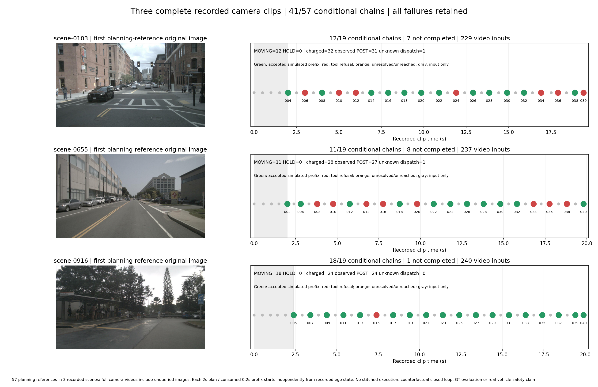

57 planning references in 3 recorded scenes; full camera videos include unqueried images. Each 2s plan / consumed 0.2s prefix starts independently from recorded ego state. No stitched execution, counterfactual closed loop, GT evaluation or real-vehicle safety claim.
扣账/已观察POST/派发未知分别为 84/82/2；未知不等于服务失败。
